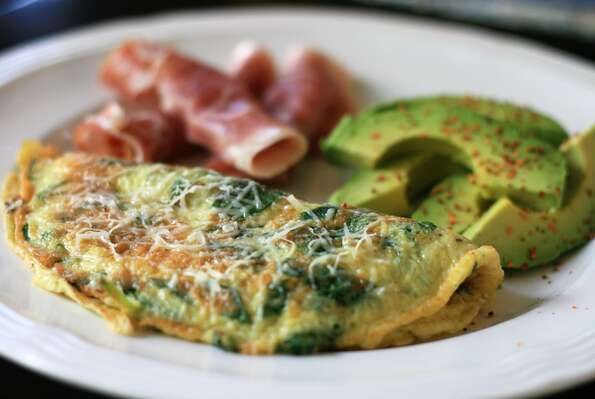

Baby Spinach Omelette

Tender baby spinach, Parmesan cheese, and a little nutmeg are cooked with eggs. A carb-cutter's perfect start for the day.
Prep: 6 mins
Cook: 9 mins
Total: 15 mins
Servings: 1
Yield: 1 serving
Ingredients
2 eggs
1 cup torn baby spinach leaves
1½ tablespoons grated Parmesan cheese/li>
¼ teaspoon onion powder
⅛ teaspoon ground nutmeg
salt and pepper to taste
Steps
- In a bowl, beat the eggs, and stir in the baby spinach and Parmesan cheese. Season with onion powder, nutmeg, salt, and pepper.
- In a small skillet coated with cooking spray over medium heat, cook the egg mixture about 3 minutes, until partially set. Flip with a spatula, and continue cooking 2 to 3 minutes. Reduce heat to low, and continue cooking 2 to 3 minutes, or to desired doneness.
Nutrition Facts
Per Serving:
186 calories; protein 16.4g; carbohydrates 2.8g; fat 12.3g; cholesterol 378.6mg; sodium 278.7mg.